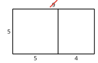

Anteriormente, los estudiantes usaron rectángulos con cuadrículas para representar estrategias basadas en las propiedades distributiva y asociativa. En esta lección, utilizan las mismas estrategias, pero las representan en un diagrama de área sin cuadrícula. Luego, los estudiantes emparejan expresiones que podrían representar el área del mismo rectángulo, sin utilizar diagramas. Su trabajo los ayuda a desarrollar la fluidez en la multiplicación con números hasta 100.
Preguntas de reflexión.
¿Qué estudiantes propusieron una estrategia inesperada en la lección de hoy? ¿Cómo puede estar más abierto a las ideas de cada estudiante?
SubsubsecciónCalentamiento (10 mins)
Tiempo recomendado.
10 minutos
Narrativa.
En esta actividad de calentamiento se invita a los estudiantes a comparar cuatro representaciones de la multiplicación. Los estudiantes van a sentir la necesidad de usar el lenguaje de manera precisa al hablar sobre las características de los elementos que se están comparando. Durante la síntesis, pida a los estudiantes que expliquen el significado de la terminología que utilicen, como estrategias, área y partes.
Lanzamiento.
Grupos de 2
Mostrar la imagen.
“Escojan uno que sea diferente. Prepárense para compartir por qué es diferente”
1 minuto: tiempo para pensar en silencio
Desarrollo de la actividad.
“Discutan con su compañero lo que pensaron”
2-3 minutos: discusión en pareja
Compartir y registrar respuestas.
Calentamiento44.Cuál es diferente: Una multiplicación representada de muchas formas.
B es el único que no tiene el número 3 representado como un número u objetos contables.
C es el único que no es un diagrama.
D es el único que no muestra \(3 \times 2\) o \(3 \times 4\) por separado.
Síntesis de la actividad.
“¿Qué número representan los diagramas y la expresión de C?” (18) “¿Cómo lo saben?” (Hay 18 puntos en el arreglo. Hay 18 cuadrados en el rectángulo. Si sumo las partes de la expresión o las partes del rectángulo, obtengo 18.)
“¿Cuál podría ser la longitud del lado del rectángulo que no está marcado en B? ¿Cómo lo saben?” (3, porque el rectángulo es el mismo que en A, solo que sin cuadrícula. 3 porque \(3\times 2 = 6\) y \(3 \times 4 = 12\))
Considere preguntar:
“Encontremos al menos una razón por la que cada uno es diferente”
SubsubsecciónActividad 1 (15 mins)
Tiempo recomendado.
15 minutos
Narrativa.
El propósito de esta actividad es que los estudiantes encuentren el área de rectángulos sin cuadrícula utilizando estrategias basadas en las propiedades distributivas y asociativas. Los estudiantes representan estas estrategias en rectángulos sin cuadrícula. Esto será útil en futuras lecciones cuando los estudiantes utilicen diagramas de área para representar la multiplicación de números más grandes.
Lanzamiento.
Grupos de 2
“Vamos a encontrar el área de más rectángulos. ¿En qué se diferencian estos rectángulos de los rectángulos con los que trabajamos en la última lección?” (No tienen una cuadrícula en ellos. No podemos ver los cuadrados.)
30 segundos: tiempo para pensar en silencio
Compartir respuestas.
Desarrollo de la actividad.
“Marquen o coloreen cada rectángulo para encontrar su área. Después, escriban una o más expresiones que representen su trabajo y muestren cómo encontraron el área”
5–7 minutos: tiempo de trabajo independiente
“Compartan con su compañero cómo encontraron el área de cada rectángulo. Asegúrense de hacer y responder todas las preguntas que tengan sobre sus estrategias”
3–5 minutos: discusión en pareja
Actividad45.Marca y después expresa.
En cada caso:
Marca o colorea cada rectángulo para mostrar una estrategia que ayude a encontrar su área.
Escribe una o más expresiones que representen cómo encuentras el área.
A
B
C
Solución.
A

\(5 \times (5 + 4)\) o \((5 \times 5) + (5 \times 4)\text{,}\) que es \(25 + 20\) o 45.
B
\(2 \times (3 \times 6)\) o \(2 \times 18\text{,}\) que es 36.
C
\(4 \times (7 \times 2) \text{,}\) que es \(4 \times 14\) o 56.
Para los estudiantes con dificultades.
Si los estudiantes dicen que no están seguros de dónde marcar o sombrear el rectángulo porque no pueden ver los cuadrados, considere preguntar:
“¿Qué números estás multiplicando para encontrar el área?”
“¿Cómo podrías descomponer uno de los factores para encontrar el producto? ¿Cómo mostrarías eso en el diagrama?”
Síntesis de la actividad.
“¿Cuál es la diferencia entre mostrar su estrategia en un rectángulo sin cuadrícula y mostrar su estrategia en un rectángulo con una cuadrícula?” (Yo simplemente estimé dónde debería dividir el rectángulo. Estaba pensando más en los números que en contar todos los cuadrados).
Desarrollo de lenguaje matemático.
MLR2 Recopilar y Mostrar. Dirija la atención a las palabras recopiladas de la lección anterior. Invite a los estudiantes a tomar prestado el lenguaje de la presentación según sea necesario, y actualícelo a lo largo de la lección.
Avances: Lectura, Representación, Conversación
SubsubsecciónActividad 2 (20 mins)
Tiempo recomendado.
20 minutos
Narrativa.
En esta actividad de clasificación, los estudiantes identifican expresiones que podrían representar el área del mismo rectángulo y explican su razonamiento. Para hacerlo, aplican su comprensión de las propiedades de la multiplicación y dibujan rectángulos según sea necesario mientras interpretan partes de las expresiones. Algunos estudiantes pueden clasificar las expresiones basándose únicamente en el valor de las expresiones. Anímelos a explicar o mostrar cómo saben, por ejemplo, que \(8 \times 6\) y \(3 \times 6 + 5 \times 6\) pueden representar el área del mismo rectángulo (MP2, MP7). Algunas de las expresiones de esta actividad se utilizan en la síntesis para resaltar las propiedades conmutativas, distributivas y asociativas de la multiplicación.
Entregue a cada grupo un grupo de tarjetas precortadas.
Tenga disponible papel cuadriculado.
Desarrollo de la actividad.
“Este grupo de tarjetas incluye expresiones que representan áreas de rectángulos. Agrupen las expresiones que representan el área del mismo rectángulo”
“Con su compañero, expliquen sus decisiones de clasificación. Si les ayuda, pueden dibujar rectángulos”
8 minutos: tiempo de trabajo en pareja
Actividad46.Clasificación de tarjetas: Expresiones diferentes, mismo rectángulo.
Tu profesor te dará un grupo de tarjetas con expresiones que representan áreas de rectángulos.
Clasifica las expresiones en grupos de manera que las expresiones de cada grupo representen el área del mismo rectángulo. Prepárate para explicar tu razonamiento.
Si te ayuda, puedes dibujar rectángulos.
Solución.
Ejemplos de respuestas:
A, C y L (28 unidades cuadradas, 7 unidades por 4 unidades)
B e I (42 unidades cuadradas, 6 unidades por 7 unidades)
D, F y G (24 unidades cuadradas, 8 unidades por 3 unidades)
E y K (48 unidades cuadradas, 6 unidades por 8 unidades)
J y H (36 unidades cuadradas, 9 unidades por 4 unidades)
Síntesis de la actividad.
Invite a los estudiantes a compartir su clasificación, sus dibujos (si los hay) y su explicaciones sobre cómo saben que esas expresiones corresponden.
Registre cada grupo de expresiones. Discuta las conexiones entre las expresiones, ilustrándolas en un dibujo de un rectángulo. Por ejemplo, para: \(8 \times 3\text{,}\)\((4 \times 3) \times 2\text{,}\)\(4 \times (2 \times 3)\)
haga preguntas como:
“¿En qué parte de \(4 \times (2 \times 3)\) vemos el 8?”
“¿Cuál es el área de este rectángulo? ¿Cuáles podrían ser las longitudes de sus lados?”
(Dibuje y etiquete un rectángulo.)
“¿Dónde vemos \((4 \times 3) \times 2\) en el rectángulo?”
“¿Dónde vemos \(4 \times (2 \times 3)\) en el rectángulo?”
Acceso a estudiantes con discapacidades.
Participación: Desarrollar Esfuerzo y Persistencia. Divida esta tarea en partes manejables. Dé a los estudiantes un subconjunto de las tarjetas para comenzar y presente las tarjetas restantes una vez que los estudiantes hayan completado su primer conjunto de emparejamientos.
Apoya la accesibilidad para: Atención, Enfoque
SubsubsecciónSíntesis de la lección (10 mins)
“Hoy asociamos expresiones que podían representar el área del mismo rectángulo. Pensemos en lo que nos muestran acerca de la multiplicación algunas de las expresiones que asociamos”
“¿Qué expresiones nos muestran que podemos descomponer uno de los factores y después multiplicarlos por separado?” (E y K, C y L, B e I)
Muestre las expresiones en las tarjetas F y G.
“¿Qué nos muestran estas expresiones acerca de la multiplicación?” (Cuando hay más de 2 factores, podemos decidir qué dos factores multiplicar primero sin cambiar el resultado).
Actividad de cierre47.Expresiones para un rectángulo.
Marca o colorea este rectángulo para mostrar una estrategia que ayude a encontrar su área.
Escribe una o más expresiones que representen cómo encuentras el área.
Solución.
Ejemplo de respuesta:
\(\displaystyle (6 \times 5) + (6 \times 4)\)
Posibles errores.
Los estudiantes encuentran el área del rectángulo, pero no escriben una expresión que represente su estrategia.
Acciones para apoyar el aprendizaje.
Antes de la actividad de calentamiento, destaque una estrategia para encontrar el área del rectángulo y discuta cómo escribir expresiones que representen la estrategia.